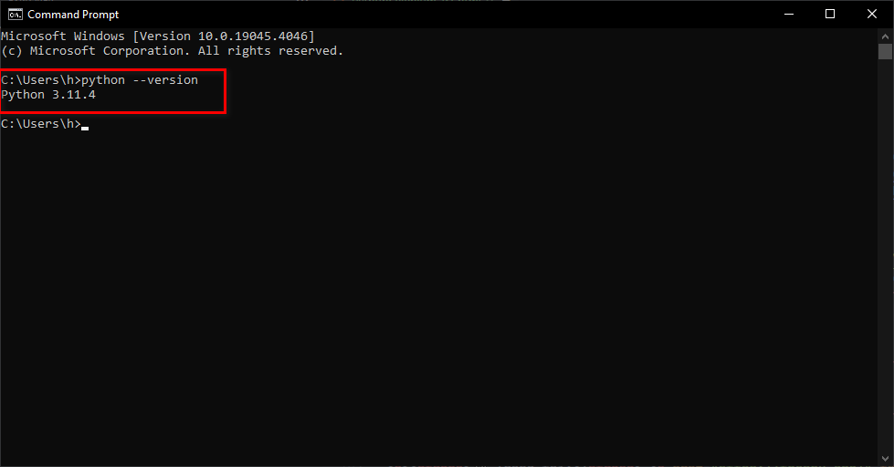
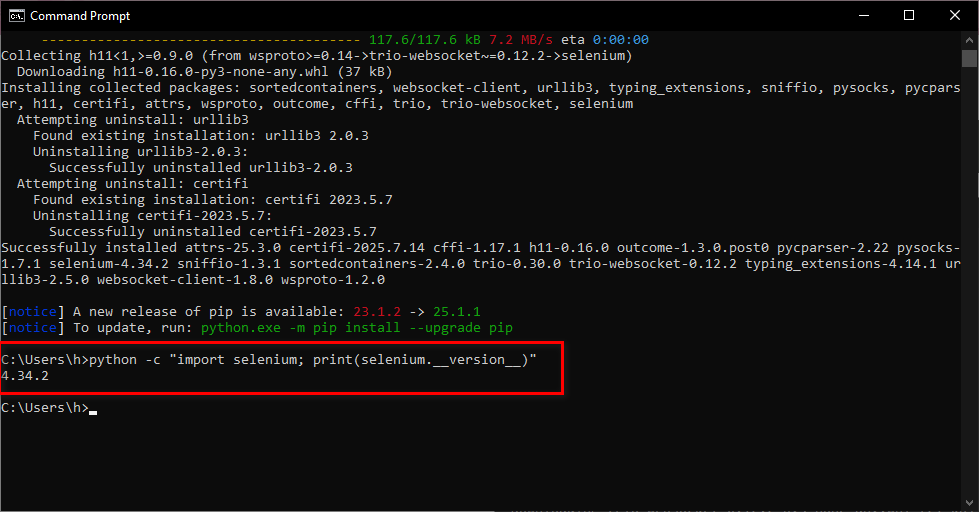
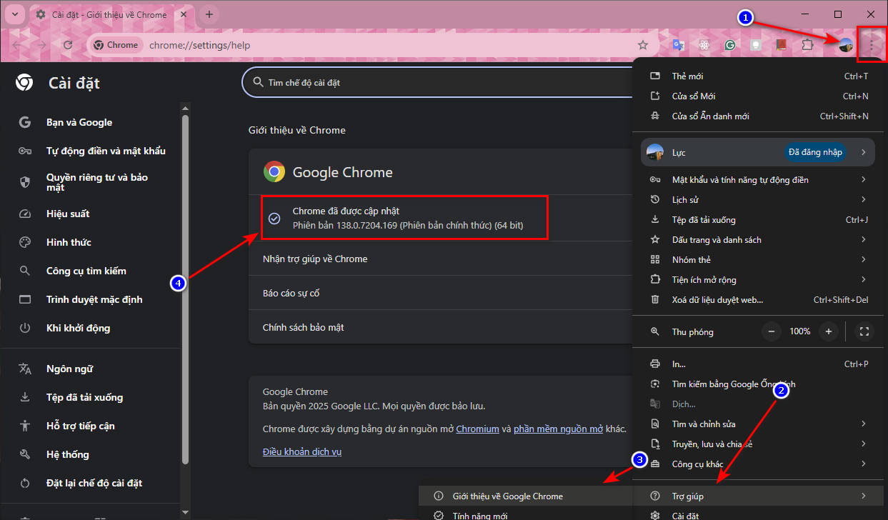
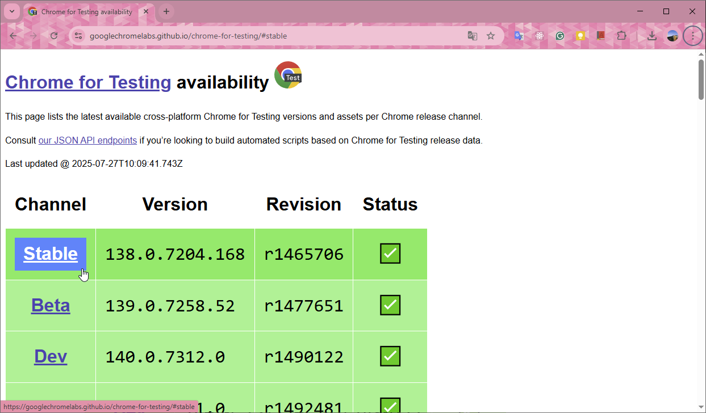
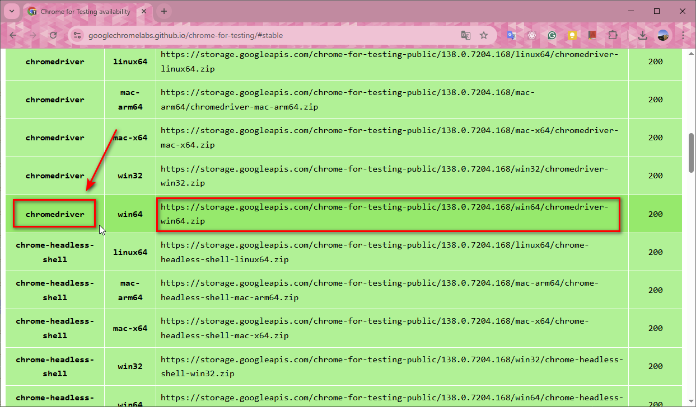
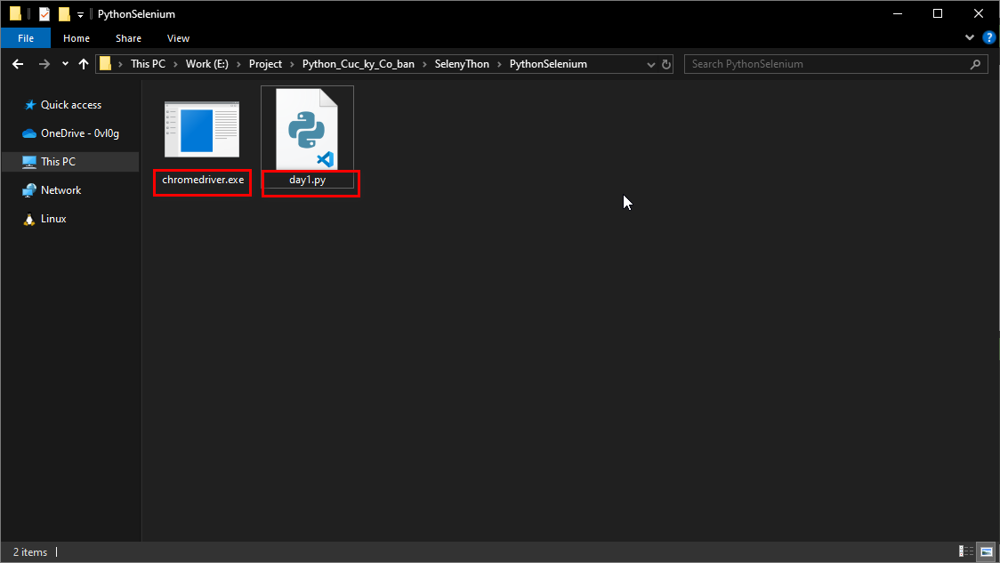

🔗 Trang tải: https://www.python.org/downloads/
Sau khi tải và cài đặt xong, thực hiện mở cmd để verify đã cài đặt thành công:
python --versionHình ảnh verfiy cài đặt thành công version Python 3.11.4:
pip install seleniumSau khi cài đặt xong, bạn có thể kiểm tra phiên bản Selenium đã cài đặt bằng lệnh:
python -c "import selenium; print(selenium.__version__)"Hình ảnh kiểm tra phiên bản Selenium:
Để Selenium có thể điều khiển trình duyệt Chrome, bạn cần tải xuống ChromeDriver tương ứng với phiên bản Chrome của bạn.
Để kiểm tra phiên bản Chrome, mở Chrome và vào Settings → About Chrome.
Nếu Chrome version của bạn mới hơn 115 (chẳng hạn như 138), bạn truy cập https://googlechromelabs.github.io/chrome-for-testing/ để tải phiên bản ChromeDriver tương ứng.
Click vào Stable, bạn sẽ được đưa tới danh sách bên dưới.
Vì tôi sử dụng Windows 11 64-bit nên tôi tải phiên bản trong ảnh
https://storage.googleapis.com/chrome-for-testing-public/138.0.7204.168/win64/chromedriver-win64.zipGiải nén file zip và đặt chromedriver.exe vào thư mục mà bạn muốn. Ví dụ, tôi đặt nó trong thư mục PythonSelenium.
🔗 Trang tải: https://thonny.org/
Thonny là một IDE đơn giản và dễ sử dụng, rất phù hợp cho người mới bắt đầu học Python.
Giờ chúng ta sẽ viết một đoạn mã Python đơn giản để mở trình duyệt Chrome và truy cập vào trang Google.
Mở thư mục chứa chromedriver.exe và tạo một tệp Python mới, ví dụ test.py.
Trong tệp test.py, bạn có thể viết đoạn mã sau:
from selenium import webdriver
from selenium.webdriver.chrome.service import Service
from selenium.webdriver.common.by import By
import time
service = Service(executable_path="./chromedriver.exe")
driver = webdriver.Chrome(service=service)
driver.get("https://www.google.com")
time.sleep(5)
driver.quit()Chạy đoạn mã này trong cmd để mở trình duyệt Chrome và truy cập vào trang Google. Sau 5 giây, trình duyệt sẽ tự động đóng lại.
Lưu ý: Bạn cần đảm bảo rằng chromedriver.exe nằm trong cùng thư mục với tệp Python của bạn hoặc cung cấp đường dẫn đầy đủ đến tệp chromedriver.exe.
Chúc mừng bạn đã hoàn thành chương 1!
Hãy thử viết một đoạn mã khác để tự động tìm kiếm một từ khóa trên Google. Bạn có thể sử dụng đoạn mã sau làm gợi ý:
from selenium import webdriver
from selenium.webdriver.chrome.service import Service
from selenium.webdriver.common.by import By
import time
service = Service(executable_path="./chromedriver.exe")
driver = webdriver.Chrome(service=service)
driver.get("https://www.google.com")
search_box = driver.find_element(By.NAME, "q")
search_box.send_keys("Python Selenium")
search_box.submit()
time.sleep(5)
driver.quit()Chúc bạn thành công!